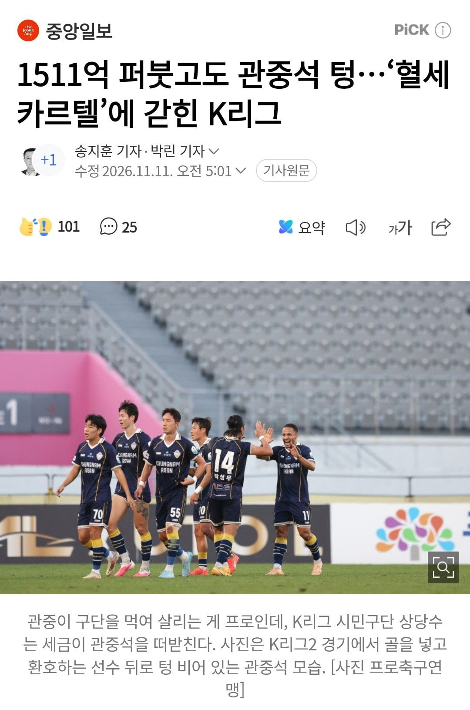

1511억 퍼붓고도 관중석 텅…‘혈세 카르텔’에 갇힌 K리그
댓글
자체운영 되는데만 남기고 다 샤따내린다음에 남는애들은 컴활이나 따라고 해라
컴활따며누뭐 바껴요?
인공지능 딸깍이 더 잘하는데?
그냥 조롱하는거잖아
저걸 곧이 곧대로 해석하고 있냐
개축 자체를 어디 리셋버튼 하나 만들어서 싹 지우고 다시 시작해야함 걍
보는놈 운영하는놈 전부 어딘가 나사가 심하게 빠져있음
안보는놈 입장에선 뭐 그러려니 하겠는데 세금때려박으니 안좆같을래야 안좆같을수가 읍제
1500억이라뇨 추경해서 2400+@잖아요 ㅋㅋ
관공서에 티켓 강매도 있구요 ㅎㅎ
그들만의 리그
그들만의 국대
한국축구 잘 돌아간다
성적이 저조하면 보조금도 줄이는게 맞지
언제적 2002뽕으로 세금쳐먹는거야
애초에 관객은 한정적인데 구단만 쓸데 없이 많으니 그런거지 걍 단순 계산으로 구단을 30개에서 10개로 줄이면 각 구단별로 관객은 3배가 되는거지 그리고 사진은 K2인데 2부리그에 인기 기대하는게 개오바지 국내 최고 인기 스포츠라는 야구조차 10개 구단에 퓨쳐스 리그는 당연히 텅텅임
세금으로 앰창fc들 지원이 아니라 운영을 왜 해주는건지 모르겠음 ㅋㅋ 세금이 쳐 남아도나
세금 지원 끊어라 다른데 쓸데 없다면서